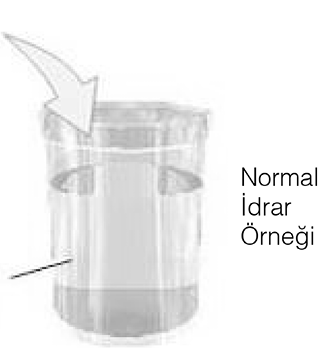

İkinci Bölüm
TEŞHİS VE TEDAVİ
Problemin Teşhis ve Tedavisi
Aileye bu konuda rehberlik yapmadan önce problemi yaşayan ailenin alt ıslatma olayını gerçek bir problem kabul etmesi ve ikna olması gerekmektedir. Bundan sonraki aşamada ancak tıbbı nazara vermek gerek ve bu alanda bilinmeyenleri ortadan kaldıran yöntem ve araçlardan genel kültür bağlamında bahsetmek faydalı olabilir. Böylece tedaviye isteklilik pekiştirilmiş olur. Zira alt ıslatma ile ilgili yoğun sıkıntı yaşamayan, problemi görmezden gelen ve ailedeki diğer enüretikler (alt ıslatanlar) gibi bu çocuklarının da bir süre sonra düzeleceğini ümit eden bazı aileler olabilir.
Ancak ailede daha önce enüretik olan (alt ıslatan) biri olsa da, çocuklarında aynı problemi görmek her aile için bir süre sonra kabul edilemez bir durum haline gelebilir. Anne babalar bu durumu kendi başlarına çözmek için ellerinden geleni yaparlar. Çocuğu korkutmak, kendi çarşafını kendisine yıkatmak, iyi davranmak, kötü davranmak veya görmezden gelmek gibi tutumların hepsini denerler. Fiziksel cezalar bile yalnızca ana babaların çaresizlik ve öfkelerinin bir göstergesi olarak değil, aynı zamanda bu problemin düzeltilmesi için denenen son yol olarak görülmelidir.
Problemin düzeltilmesi için ailelerin bütün çabalarının boşa çıkması ve konunun kimseyle paylaşılamayacak kadar utanılacak bir durum olarak algılanması, anne babada suçluluk ve yetersizlik duygularını harekete geçirir. Şifalı bitkilerin ve erkek çocukların sünnet edilmesinin de denenmesinden sonra genellikle ailelerin çoğu ümitsizliğe kapılır ve tedavi arayışından vazgeçer.
Başkasından yardım isteme ânı, bu açıdan enürezis nokturnanın (gece alt işeme) tedavisinde çok önemli bir basamak olarak görülmektedir.1 Bu bilgiler ışığında çocuğa uygulanacak psiko-pedagojik tedavinin yanı sıra, ailenin yönlendirilmesi, enürezis tedavisinde zorunluluk halini almış bulunmaktadır. (Yavuzer, 1997:251)
Bu sebeple bu problemini paylaşan bir aile okullardaki psikolojik danışmanlar için 1. derecede müdahale edilmesi gereken bir ailedir. Gece alt işeme probleminin tedavi edilebilir bir hastalık olduğu, istenirse ve karşılıklı iletişim içinde olunursa daha kolay ve hızlı bir sonuç alınabilineceği anlatılmalı, çocuk ve ebeveynleri motive edilmelidir.
“Hastalık yoktur, hasta vardır ve her problemin mutlaka bir sebebi vardır” prensibinden hareketle önce sebep araştırılıp bulunmalıdır. Bu rahatsızlık, Mikrobik, organik veya psikolojik sebeplerin birinden kaynaklanır. Ailelerin bu sebepler ve aşağıda belirtilecek olan tedavi işlemleri konusunda bilgilendirilmeleri, önce başvurulması ve araştırılması gereken hususlar, sıralamalar noktasında genel kültürel düzeyde dahi olsa aydınlatılmaları en azından bunun da tedavi edilmesi gereken ciddi bir problem olduğu ayrıca aileye de bu aşamada evde yapması gerekenler ile ilgili görevler düştüğü konusunda yapılacak telkinler faydalı olacaktır.
Çocukta gece işemelerinin varlığında başvurulan uzman hekimlerin lüzumlu gördükleri durumlarda yatırdıkları inceleme ve tetkikler:
Alt ıslatma problemi yaşayan çocuklara durumları ve tespit edilen bulguları paralelinde hastanelerdeki Ürolog hekimlerin, çocuk cerrahlarının ya da çocuk sağlığı ve hastalıkları uzmanının gerekli göreceği aşağıdaki tetkikler yapılmaktadır.
Hekimlerin İsteyebileceği Tahlil ve Uygulamalar
TİT (Tam idrar tahlili): üre, kreatinin, elektrolit, açlık kan şekeri tetkikleri ve kan tahlili araştırmaları bu konuda başvuran her çocuk için yapılan tahlillerdir.
Ultrasonografi (USG): Böbreğin, yerleşimi, boyutları, idrar boruları ve idrar torbası hakkında bilgi veren bir yöntemdir.
Direkt üriner sistem grafisi (DUSG): En basit üroradyolojik yöntem olup idrar yolunun radyolojik muayenesinin ilk adımıdır. Yatarak çekilen ve pelvisi (leğen kemiğini) içine alan boş karın grafisidir. Kontrast maddenin yaşa göre uygun dozunun enjeksiyonundan sonra belirli aralıklarla (5’, 10’, 20’ ve 30’. dakikalarda) film çekilir.
Üroflowmetri: İşeme sırasında idrar akımının hızını, şeklini ve miktarını gösteren bir testtir. İdrar kesesine ait sebeplerle veya idrar kesesinin çıkışından sonraki hastalıklarda (idrar yolu darlıkları gibi) bozulmuş olan işeme fonksiyonunun araştırılmasında kullanılır.
Ürodinami: Idrar torbasının dolma ve boşalma fonksiyonlarının incelenmesi. Yani, idrar kaçırmanın varlığını, biçimini, idrar torbası ve idrar yolunun fonksiyonlarını gösteren bilgisayar destekli idrarın basınç ve akım değişikliklerini ölçen bir uygulamadır.
İdrar kültürü: üriner sistem araştırmalarının en önemli basamaklarından birisidir ve idrar yolları ile ilgili enfeksiyondan şüphelenilen çocuklarda tek kesin tanı yöntemidir.
Voiding sistoüretrografi (VCUG): İdrar torbası ve alt üriner sistem incelemesi: İdrar torbası ve idrar kanalının x-ışınları kullanılarak görüntülenmesidir. İdrar kanalı kateteri yoluyla idrar torbasına ışık geçirmez madde verildikten sonra işeme sırasında idrar torbasının, idrar kanalının ve varsa yukarıda yer alan idrar borularındaki reflünün (idrar geri kaçışı) görüntülenmesini sağlar. Vezikoüreteral reflü (böbreğe idrar geri kaçışı) probleminde tanı için vazgeçilmez yöntemdir.
Gibi bir dizi tetkikler uzman hekimler tarafından yaptırılır.
• Öncelikle idrar yollarında mikrobik bir durumun varlığı, basit bir idrar tahlili ile araştırılabilir. Bu duruma idrar yollarının özelliği sebebiyle daha çok kız çocuklarında rastlanmaktadır. Daha nadiren rastlansa da idrar yollarındaki yapısal kusurların varlığı radyolojik incelemeler ile belirlenebilir.
• Nörolojik muayene ve şeker hastalığı varlığı açısından kan şeker düzeyi araştırılmalıdır eğer bunlar sebebi açıklayamazsa,
• Ultrason ile böbrek ve idrar torbasına bakılır. Ultrasonda idrar torbasının küçüklüğü tespit edilirse, idrar torbasının kas gerginliğini ve kapasitesini arttırmak için çocuğa idrar yapma hissi olduğu halde bir süre daha idrarını tutması öğretilir ve bu süre giderek arttırılır. Çocuktan yazılı bir takvim tutması, her sabah kuru veya ıslak kalktığını işaretlemesi istenir, çocuğa mükâfatlar verilir.
Akşamları saat sekizden sonra sıvı alımının azaltılması da tedaviyi kolaylaştırır.
• Solunumu engelleyen geniz eti, bademcik, kronik bronşit, gibi rahatsızlıklar araştırılır. Obstruktif uyku apnesi (soluk yolunun tıkanmasından kaynaklanan uyku sırasında zaman zaman kısa aralıklarla solunumun durması) açısından takip edilen çocuklarda, gece ağzı açık uyuma ve horlama şikâyeti olanların, davranış tedavisinde başarısız oldukları görülmüştür. KBB uzmanın da bu konuda çocuğu görmesi ve eğer gerekirse cerrahi müdahale ile problem olan durumu ortadan kaldırması gerekebilir.
• Çocukta ürogenital sisteme ait organik bir bozukluk yoksa yani idrar kaçırma fiziksel bir sebeple açıklanamıyorsa, Mikrobik veya organik bir sebep de bulunamazsa o zaman aile veya çocukta psikolojik problem aranır.
• Altını ıslatma sebeplerinden bir kısmının psikolojik olduğu kabul edilir. Sonradan başlayan gece işemesi çocuğun çok ilgi gördüğü, kendini güvende hissettiği ve kendisinin merkez olduğu bir dönem olan bebeklik dönemine şuur dışı geri dönmesi ve orada kalmak istemesidir. Kendisini neden güvende hissetmediği dolaylı sorularla öğrenilmeye çalışılır varsa kardeş kıskançlığı ki bu gibi durumlarda çok rastlanır, olup olmadığı gözlemlenir.
• Psikolojik kaynaklı gece işemelerinin tedavisinde, ailenin tedavi başında ve tedavi süresi boyunca takındığı tavır çok önemlidir. Çocuğu dışlama, küçültücü kelimeler, alaya alma gerek direk gerekse ima ile bile olsa çok hatalıdır ve tedaviyi daha da zorlaştırır. Oysa ailenin çocuğu doktora götürmesi, ona zaman ve para harcaması, kan, idrar tetkiklerinin yapılması, anne babanın çocuğu için sırada beklemesi dahi aslında farkında olunmasa da tedavinin bir parçasıdır. Çocuk ailesinin kendisine değer verdiğini, onun için çaba sarf ettiğini görmektedir. Araştırmalar sonunda bir sebep bulunması ve ona yönelik ilaçlar yazılması yani en büyük problem olan bu sıkıntının adının konması veya sonuçlar normal bulunursa, ‘Bir problem yok.’ denmesi bile tedaviyi başlatan ilk adım olacaktır.
İlaç tedavisi yanında uygulanabilen psikoterapi, özellikle davranışsal problemler yaşayanlarda etkili olmaktadır. Diğer bir yöntem ise, ıslanmaya duyarlı nesnelerle döşenmiş olan özel donanımlı bir yatağın, ıslanma ile ikaz edici bir ses çıkarmasına ve kişinin bu durumu zaman içinde öğrenebilmesine dayanan bir sistemdir.
Tedavi
Sonuç olarak neden enürezis (alt ıslatma) sorusunun bir tek cevabı yoktur. Birçok faktör tek başına ya da birlikte alt ıslatmaya yol açabilir. Bu durumda en önemli nokta alt ıslatma probleminin organik bir hastalık ile ilişkisinin olup olmadığının belirlenmesidir.
Altını ıslatma problemi idrar yolu enfeksiyonu, kabızlık veya SİSTİT (İdrar Kesesi İltihabı) gibi organik bir sebebe bağlıysa öncelikle bu tür problemler çözülmelidir.
Aileye İdrar Yolu Enfeksiyonu ile İlgili Öneriler
İdrar yolu enfeksiyonunu önlemek için alınması gereken önlemlerden biri :
Çocuk, gerekli oldukça tuvalete gidip idrar torbasını boşaltması konusunda uyarılmalıdır. Özellikle okul çağındaki çocuklar, okulda geçirdikleri uzun saatler boyunca tuvalete gitmeden eve gelebiliyorlar, böylece idrarın uzun süre idrar torbasında kalmasıyla enfeksiyonlara zemin hazırlıyorlar.
Bol su içilmesi de, idrar yolu enfeksiyonundan koruyucu olacaktır.
İç çamaşırlar eğer sık idrar kaçırma var ise günlük değiştirilmelidir.
İdrar yolu enfeksiyonunu önlemek için alınması gereken önlemlerden diğeri de; bebeklerde bezi sık değiştirip altının kirli kalmamasını sağlamak, özellikle kızlarda alt temizliğini önden arkaya doğru yapmak önemlidir. Çocuk büyüdüğünde de tuvalette kendi temizliğini uygun şekilde yapması öğretilmelidir. Sıkı iç çamaşırları da giydirmemek gerekir. Unutulmamalıdır ki ateşli bir çocukta ilk akla getirilip kontrol edilmesi gereken üç enfeksiyondan birisi idrar yolu enfeksiyonudur (diğer ikisi solunum yolu ve orta kulak enfeksiyonları).
Sistit (İdrar Kesesi İltihabı) içinde aynı durum söz konusudur. Sağlıklı bir idrar torbasının içi temizdir ve bakteri barındırmaz. Ancak deride bağırsaklarda, anüs ve vajen bölgesinde bakteriler mevcuttur. Bu bakteriler bazen buralardan üriner sisteme geçerek, idar kanalından yukarıya doğru ilerleyip idrar torbasına ulaşabilirler. Normalde idrar torbası kendini bu bakterilerden koruyabilir ve onları idrarla yıkayarak atabilir.
Ancak bu bakteriler idrar torbasında kalır ve burada çoğalırsa enfeksiyona sebep olur. Bu yüzden idrar yolu enfeksiyonunda alınması gereken yukarıdaki önlemlerin aynısı sistit için de geçerlidir.
Eğer problem fizyolojik ve hormonsal etkenler ile psiko-sosyal sebeplerden kaynaklanıyor ise tedavi aşağıdaki sıralamaya göre ve sunulan seçeneklerden en uygun olan birini kabul etmek ve takip etmek ile devam ettirilir.
İlaç tedavisi ve yaşanılan ya da hissedilen problemlere yönelik psikoterapi yüz güldürücü sonuçlar vermektedir.
İşeme Takvimi Doldurma
Burada okullardaki psikolojik danışman ve psikolog meslektaşlarımıza düşen en önemli görev aileye tedavi ile ilgili tüm bilgiler olası sebepler ve tedavi yolları ile birlikte, eğitim durumları yeterli ise ayrıntıları ile değil ise yüzeysel bilgilendirme şeklinde vermeleri, mutlaka öğrenci ve veliyi, Çocuk ürologu, çocuk sağlığı ve hastalıkları uzmanı, çocuk cerrahı ve gerekirse çocuk psikiyatristine ve hatta alınan öyküye göre KBB uzmanına bilinçli bir şekilde yönlendirmeleridir. Bu yönlendirme öncesinde aşağıda yer alan “işeme takvimi” ve nasıl doldurulacağı da aile ile paylaşılır ve doldurması da sağlanırsa ailenin zaman kazanması ve doğru tanı konulması noktasında avantaj kazanması ayrıca çocuğun aile ile birlikte tedaviye katılması sağlanmış olur.
Tedavide ilk ve en önemli adım, çocuğun tedaviye motive edilmesidir. Bu amaçla, çocukla sıcak bir ilişki kurulması, ailenin anlayış ve desteğinin sağlanması, problemin mutlaka çözüleceğine dair güven verilmesi ve suçluluk duygusunun giderilmesi çok önemlidir.
İşeme sıklığının ve miktarının değerlendirilmesi için 3 günlük işeme takvimi tutulması faydalıdır. Tuvalete gitme sıklığı, işenen idrar miktarı, sıkışma, kaçırma, damlatma olup olmadığı, kabızlık, enkoprezis (dışkı kaçırma) gibi durumlar bu şekilde tarafsız olarak değerlendirilmeye çalışılır. Aile tarafından günlük sıvı alımı miktarı ve gün içinde dağılımı, günlük idrar miktarı ölçülmelidir.
|
3 GÜNLÜK İŞEME TAKVİMİ |
1. GÜN |
2. GÜN |
3. GÜN |
|
Tuvalete gitme sayısı (sabah kalkıştan akşam yatana kadar ki sürede) |
|||
|
Günlük idrar miktarı. |
|||
|
Günlük tükettiği su miktarı. |
|||
|
Sıkışarak, aciliyet hissi ile wc ye gitme sayısı |
|||
|
İdrar kaçırma, damlatma sayısı. |
|||
|
Kabızlık. |
|||
|
Dışkı kaçırma. |
Aileler en azından çocuğun gün içinde kaç kere tuvalete gittiğini tespit etmelidirler.
Günlük idrar miktarı: Bir pet şişe ile ölçülebilir.
Günlük tükettiği su miktarına sıvı olan her şey dâhildir. Dondurma, çay, meşrubat v. s. Ağırlık olarak ölçülmelidir.
Gece Alt Islatma Tedavisinin Üç Biçimi
1. Davranış değiştirme tedavisi
• Kayıt tutma ve ödüllendirme
• Sıvı kısıtlanması ve gece uyandırma
• İdrar torbası eğitim eksersizleri
• Koşullandırma (Alarm cihazı)
2. İlaç tedavisi
3. İlk ikisinin birlikte uygulanması
Bunları sırası ile açıklamak gerekirse:
1. Davranış Değiştirme Tedavisi
a) Kayıt Tutma ve Ödüllendirme
Buna “motivasyon tedavisi” denebilir. Yani, çocuğa ıslak ve kuru geceleri takvimde işaretletip kuru geceler için ödüllendirme şeklindeki önlemler paketi uygulanır. Sadece bu önerilerle yakınmaları çok azalan, hatta geçen çocuklar vardır. Tedavinin prensibi, kuru kalınan zamanlar için ödüllendirilmeye, istemeyerek ıslanma olduğunda da çocuğun sorumluluğunu artırmaya dayanır.
Çocuk ve aile ile sık görüşmeyi gerektirir. Bu tedavide diğer bir yaklaşım çocuğu sorumlulukla desteklemektir. İyileşmeyi değerlendirmek için hem hasta hem doktora gerekli olan bir işlem de ıslak ve kuru gecelerin kaydını tutmaktır. Bir örnek tablo hazırlanabilir. Bkz. (şekil-11) ve (şekil-12).
Küçük çocuklar kuru geceler için takvim üzerine yıldız koymayı severler.2 Her yaştaki çocuğun başkalarının yardımı olmadan doldurabileceği bir şema önerilmelidir. Bu yöntem diğer tedavilerin başarısını arttırır, ancak tek başına yeterli değildir.3
Ödüllendirme ve Cezalandırma
Bir çocuk öncelikle idrar kaçırma problemini çözebilmek için kuru kalmayı istemeli ve bunun mümkün olduğunu bilmelidir. Küçük stresler bu yeteneğin kazanılmasına yardımcı olabilir, ancak ağır stresler bu olaya engel olur. Bu sebeple aşırı ödüllendirme ve cezalandırma doğru değildir.4
Çocukların kuru kalktıkları sabahlarda özellikle duygusal içerikli olarak ödüllendirilmeleri, ıslak kalktıklarında ise anlayışlı davranmak, iyileşme süreci üzerine etkilidir.5
Çocuklar kuru kalktıklarında her sabah ödüllendirilmeli ve ıslak günlerde ödülün geri alınması sağlanmalıdır. Islak kalktıklarında kirli çamaşır ve çarşafları kendilerinin değiştirmesi ve temizleme işinde de annelerine yardım etmeleri önemlidir. Cezalandırma yöntemleri veya çocukların altını bezleme davranışı bu konuda tasvip edilmeyen davranışlardır.
Çocuğun yatağa ruhen huzurlu olarak girmesi sağlanmalıdır. Aile içi tartışmalara dikkat edilmeli, yatmadan önce korku filmleri izlemesi engellenmelidir.
Tedavi süresince çocuk üzüleceği şeylerden uzak tutulmalı ebeveynleri tarafından yeterince sevgi ve ilgi gösterilmelidir.
NOT: Bu süreç esnasında çocuğun altı kesinlikle bezlenmemelidir.
Çocuğun odasında bir tedavi çizelgesi hazırlanmalı ve her gün yaşanan olay buraya işaretlenmelidir. Altını ıslatmış ise yağmur resmi, ıslatmadı ise güneş resmi yapılır. Bir hafta sonunda güneş resmi çoğunlukta ise çocuk ödüllendirilmeli ve teşvik edilmelidir. Güneş resmi yerine çocuklar yıldız çizmeyi daha çok sevmektedir. (Şekil-11) ve (Şekil-12)
(Şekil-11)
(Şekil-12)
NOT: Her yaştaki çocuğun başkalarının yardımı olmadan doldurabileceği yukarıdaki gibi bir şema önerilmelidir. Bu yöntem diğer tedavilerin başarısını arttırır.
Psikolojik Danışmanlar Çocukları Takip Sürecinde Hangi Hususlara Dikkat Etmeliler?
Birinci ayın sonunda aileler görüşmeye çağrılarak kayıt tuttukları çizelgeden ıslak ve kuru gecelerin sayısına bakılır ve durum, birlikte değerlendirilir. Bir ay sonunda başvuru anındaki aylık ıslak gece sayısı % 50 ve üzerinde düzelme gösteren vakalarda davranış tedavisine devam edilir. Islak gecelerde % 50’nin altında düzelme saptanan vakalarda ise davranış tedavisine ek olarak doktora yönlendirilerek ilaçla tedavisinin de başlatılması aileye önerilir.
b) Sıvı Kısıtlanması ve Gece Uyandırma
Yatak ıslatma uykunun ilk saatlerinde daha sıktır. Bu sebeple ebeveynler çocuklarının kuru kalması ya da daha az yataklarını ıslatmaları için, kendileri yatmadan önce uyuyan çocuklarını tuvalete kaldırırlar. Uyandırma ve kaldırmanın çamaşır yıkama problemini azaltması dışında tek başına alt ıslatmanın iyileşmesine etkili olduğuna dair bir bilgi yoktur. Diğer yönden, akşam fazla sulu besin alan çocuklarda alt ıslatmanın daha sık olduğu bilinmektedir. Bu sebeple, akşam saatlerinde, fazla sulu besin alma alışkanlığı oları çocuklara bu yöntem önerilir. Ancak bu yöntemlerde çocuğun kesin işbirliği gerekmektedir.6
Bu konuda ailenin ev ortamında pratik olarak uygulayabileceği bazı önlemler ise şunlardır:
Uyku öncesi alınan sıvının kısıtlanması,
1- Çocuğa yatmadan 2 saat önce sıvı gıdalar verilmemelidir. Ancak bu durum fizyolojik kökenli alt ıslatmalarda tavsiye edilir yoksa ruhsal kökenli psikolojik alt ıslatmada çocuğun yatağa yatarken su içmesini engellemek, varolan karmaşa ve sıkıntıları arttırarak yarar yerine zarar verebilir.
2- Şekerli kafeinli içeceklerin-çay, kahve kola gibi- idrar torbası kasılmasını arttırdığı düşüncesiyle bunların gece alımı engellenmelidir.
Yatmadan önce WC ihtiyacı giderilmelidir.
Gece kalkıp tuvalete gitme bir hedef olarak kesinleştirilmelidir.
Çocuğun kuru kalma sorumluluğunu üstüne almasına yardım edilmelidir.
Tuvalete ulaşmak kolaylaştırılmalıdır. (koridor veya çocuk odası gece lambası ile aydınlatılmalı)
Her zaman aynı saatlerde yatması sağlanmalıdır.
Çocuk yattıktan bir saat sonra uyandırılmalı ve WC ihtiyacı giderilmelidir. (Çocuk bu hareketi bilinçli olarak yapmalı yani WC ye gittiğinin farkında olmalıdır.)
Gece kuru kalması için bez bağlanmamalıdır. Bu tür yöntemler temizlik için yararlı olmakla birlikte çocukların gece kalkma motivasyonlarını olumsuz etkilemektedir.
Önce çocukların kendiliğinden uyanması denenir, bu mümkün olmuyorsa ailenin çocuğu gece uyandırıp tuvalete gitmesini sağlayan program uygulanır. Daha önce başarılı olduğu gösterilmiş 6 günlük bir programın ayrıntıları aşağıda anlatılmıştır.
Altı Günlük Program
İlk gece çocuk gece 01:00’e kadar her saat başı uyandırılır. Çocukla konuşularak ve yürütülerek uyandığından emin olunur. Altı kuruysa övücü sözler söylenir ve “Tuvalete girme ihtiyacın var mı yoksa bir sonraki saati mi bekleyeceksin?” sorusu sorulur. Çocuk tuvalete gitmek isterse tek başına tuvalete yürümesi istenir. Eğer çocuk altını ıslatmışsa pijama ve iç çamaşırlarını kendisinin değiştirmesi teşvik edilir. Gece 1’de uyandırıldığında kuru olsa bile idrarını yapmaya çalışması söylenir.
Daha sonraki beş gece çocuk bir kez uyandırılır. İkinci gece uyuduktan 3 saat sonra, üçüncü gece 2. 5 saat sonra 2 saat ve böylece süre azaltılarak altıncı gece uyuduktan 1 saat sonra uyandırılır. Son gece, bundan sonra kendisinin uyanması söylenir.
Bu programdan sonra altını ıslatma tekrarlarsa (3 gün üst üste altını ıslatırsa) yeniden 6 gecelik uyandırma programı tekrarlanır.
|
Altı Günlük Program |
|
|
1. GECE |
Gece 01:00’e kadar her saat başı uyandırılır |
|
2. GECE |
Çocuk uyuduktan 3 saat sonra 1 kere uyandırılır |
|
3. GECE |
Çocuk uyuduktan 2, 5 saat sonra 1 kere uyandırılır |
|
4. GECE |
Çocuk uyuduktan 2 saat sonra 1 kere uyandırılır |
|
5. GECE |
Çocuk uyuduktan 1, 5 saat sonra 1 kere uyandırılır |
|
6. GECE |
Çocuk uyuduktan 1 saat sonra 1 kere uyandırılır |
Bazı çalışmalarda bu program ile % 92 oranında çocukların kuru kalması sağlanmış, bunların sadece % 20’sinde ise ileriki zamanlarda yeniden altını ıslatma problemi tekrarlamıştır.
c) İdrar Torbası Eğitim Egzersizleri
İdrar torbası eğitimi, istemli olarak işeme sıklığının azaltılmasıyla idrar torbasının gerilip genişlemesi, fonksiyonel kapasitesinin artması esasına dayanır. İdrar torbası kapasitesi küçük, sık tuvalete giden çocuklar bu işlemden fayda görebilirler.7 İdrar torbası egzersizleri genelde uykuda altını ıslatan çocuklarda daha çok kullanılmaktadır.
Bu yöntemle sık tuvalete gitme alışkanlığı kırılır. Bu çocuklar gece daha fazla süre idrar tutabilirler. Tek başına yeterli olmamakla birlikte özellikle alarm tedavisine ek olarak kullanıldığında başarı şansını arttırır.8
Fonksiyonel idrar torbası kapasitesinin arttırılması işeme aralıklarının istemli olarak uzatılmasıyla sağlanabilir. İdrar akımının istemli olarak durdurulması gibi egzersizler bu tekniğe eklenebilir. Gündüz sıvı yüklenerek tekniğin etkinliği arttırılabilir. Bu şekilde uygulanan tedavinin, sıvı kısıtlaması ve rast gele uyandırma veya psikoterapiye göre daha etkili olduğu gösterilmiştir.9
İşeme sıklığı ve atılan idrar miktarı üç gün izlenerek bir baz elde edilir.
Çift İşeme Egzersizi
İdrar torbası çıkışındaki kas normal işeme sırasında idrarın birkaç kez durdurulması ile güçlendirilebilir.
Yukarıda ele alınanların dışında çocuğa düzenli aralıklarla tuvalete gitmesini önermek, işeme sırasında uygun pozisyon (oturarak) ve çift işeme ile idrar torbasının tam boşalmasına olanak vermek çok önemlidir. İdrar torbası çıkışındaki kas normal işeme sırasında idrarın birkaç kez durdurulması ile güçlendirilebilir.
Bu önemli bir egzersiz olup ilk başlarda alıştırılırken aile kontrolünde yaptırılmalıdır. İdrar yapmaya başlayınca 2 saniye sonra durdurması kısa bir aradan sonra geri kalan idranın da boşaltılması şeklinde uygulanır. 1 hafta sonra işeme iki yerine üçe bölünerek idrar torbası çıkışındaki kasların daha da kuvvetlenmesi sağlanır.
Çocuklarda İdrar Torbası (Mesane) Kapasitesi
• Erişkin idrar torbası kapasitesi 500-600 mL.’dir.
• Çocuklarda idrar torbası kapasitesi = (yaş + 2) x 30 mL

Bu formüle göre aşağıdaki örnek verilebilir:
• Örnek: Altı yaşındaki bir çocuğun idrar torbası kapasitesi 6 yaşındaki bir çocuk = (6+2) x 30= 240 mL’ dir.10
Dikkat: İdrar yapma sıklığı günde 7 defadan fazlaysa fonksiyonel idrar torbası kapasitesi azlığı düşünülür ve bu kapasite arttırılmaya çalışılır. İdrar torbasındaki bu sınırlılık bol sıvı alımı ve işemenin mümkün olduğunca ertelenmesi sağlanarak düzeltilmeye çalışılır.
Her gün belli zamanda, genellikle sabahları veya okuldan sonra, çocuğun fazla miktarda sıvı içmesi (500’er cc kadar yani sabah-akşam 2’şer bardak sıvı) ve idrar yapmayı mümkün olduğu kadar ertelemesi istenir. Atılan idrar haftada birkaç defa ölçülür. Amaç, yeteri kadar idrarı tutabilen bir idrar torbası (idrar torbası) kapasitesine ulaşmaktır. Bu yöntem tek başına veya kas eğitim eksersizleri (çift işeme egzersizi) ile birlikte % 30 ile % 35 çocukta başarılıdır.11
Altı aylık uygulama sonunda çocukların % 35 inde tam kuruluk, % 66’sında ise belirgin iyileşme görüldüğünü bildiren araştırmalar mevcuttur.
NOT: Bu egzersizler kitabın başında değinilen ‘organik faktörler’ gibi alt ıslatmaya sebep olabilecek diğer problemler başvurduğunuz doktor tarafından elendikten sonra yapılabilir. Bu tip egzersizler idrar yolu enfeksiyonu olan, gündüz ciddi işeme problemleri olan (Gündüz idrar kaçırma +sıkışarak idrara gitme gibi) çocuklarda uygulanmamalıdır. İdrar yolu enfeksiyonu başlığı daha önce ifade ettiğimiz Vezikoüretral reflüsü (VUR) olan bir çocukta idrar tutma ile idrar torbası basıncını arttırma olayın daha da şiddetlenmesine yol açabilir.12 Genelde idrar torbası egzersizleri uykuda altını ıslatan çocuklarda daha çok kullanılmaktadır.
Ek Bilgi: İdrarın Özellikleri
İdrar, metabolizma sonucu üretilen artık maddelerin taşındığı % 95 oranında sudan oluşan sarı renkli bir sıvıdır. Normal bir insan günde 1200-1700 ml kadar idrar çıkarır. Bu miktar bazı durumlara bağlı olarak değişir.
İçilen su miktarı, beslenme tarzı, diüretik (idrar söktürücü) kullanımı, kullanılan ilaçlar, ortamın sıcaklığı, kan basıncına bağlı olarak idrar miktarı ve niteliği değişir.
d) Alarm Cihazı Kullanarak Şartlandırma
ÖN BİLGİ: Bu tedavide elektrolitik prensiplerle çalışan alarm aletleri kullanılmaktadır. “Alarm Device”, “Conditioning Devices” veya “Bell-and-Pad” adları verilen bu sistem, ilk olarak 1904 ‘te, Alman pediatrist Pfaundler tarafından gündeme getirilmiş ve ıslak yatakların değiştirilmesi gerektiğinde, servis hemşirelerini uyarmak amacıyla kullanılmıştır. Sistem zamanla çocukların kendi kendilerine kullanabileceği şekilde değiştirilmiştir.13
Bu sistem, hasta yatağını ıslattığı an, bir damla idrarın çocuğun üzerinde yattığı telli pede veya iç çamaşırına yerleştirilen bir algılayıcıya temas etmesiyle, alarm zili veya vızıltıya benzer ses çıkaran bir aletle (buzzer), çocuğun uyandırılmasına dayanır. Daha sonraları bunların pijamaya takılmak suretiyle kullanılan şekilleri de geliştirilmiştir. Böylece işenen ilk bir kaç damla ile uyandırılıp tuvalete yetişmesine olanak sağlanmıştır. Bu kondisyon aleti hızla yatak ıslatmayı keser.
Davranış değiştirme metodunda, ödüllendirme, motivasyon ve beraberinde ‘alarm tedavisi’ dediğimiz yatak ıslatılırken çalarak çocuğu uyandıran bir zil sistemi kullanılır. Ailenin katılımını ve uzun süren ısrarlı bir tedaviyi gerektirir. Burada “Şartlı refleks” oluşturup gece idrar torbası dolumunu algılamayı öğreten alarm cihazı tedavisi tatbik edilir. Bu yöntemlerde çocuğun ve ailenin sıkı ilgisi şarttır.
Gece işemesi aynı zamanda bir derin uyku hastalığıdır. Hasta, derin uykuda olduğundan normal olarak oluşan idrar torbası kasılmalarını algılayamaz ve idrar torbası basıncındaki artışı hissedemez, sonuç olarak yatağı ıslatır. Alarm cihazları ıslaklığa duyarlıdır ve idrarın bir damlasıyla bile çocuğu uyarır ve uyanmasını sağlar.
Alarm cihazları çocuk idrar kaçırmaya başlar başlamaz harekete geçen ve aynı anda beynin de bu uyarıyla devreye girmesiyle çocuğun uyanıp idrar torbasını kontrol etmesi konusunda yardımcı olan araçlardır.
Bu da şu şekilde gerçekleşir: Alarm cihazlarında, alarm çocuğu uyandırır ve daha önemlisi istemli olarak kontrol edilebilen idrar torbası çıkışındaki dış kasın aniden kasılmasına sebep olarak idrarın idrar torbasından akmasını önler. Uyarı ses şeklindedir. İdrar gelmesini takiben alarmın çalışmasıyla tekrar tekrar uyandırılma beyni, idrar torbası üzerindeki otomatik kontrolü sağlaması konusunda eğitir. Nihayetinde, hasta ya idrar gelmeden uyanacaktır veya idrar torbasını boşaltmaya ihtiyaç duymadan bütün gece uyuyacaktır.
Alarm cihazları çocuğun gece tuvalete kalkma alışkanlığını edinmesine yardımcı olmakta ve böylece kalıcı bir tedavi imkânı sağlamaktadır. Bundan sonrası çocuğa kalmıştır. Çocuk kalkıp alarmı dikilen cepten çıkartıp sallayarak veya silerek kurutmalı, tuvalete gidip çişini yapmalıdır.
Eğer alarm çaldığı halde uyanamamış ve tamamen altını ıslatmışsa banyoya gidip çamaşırlarını değiştirmeli ve alarm cihazını kuru çamaşırlardaki yerine yerleştirmelidir. Bu tür cihazların temel amacı çocuğa gece kalkma alışkanlığını kazandırmaktır.
Enürezis nokturnanın (gece işemesi) tedavisi geceleri hastanın kendi kendine uyanarak tuvalete gitmesidir. Gece alt ıslatma durumlarında bu alarm çocuğa bu yeteneği kazandırdığı için daha kalıcı ve tekrarlama olasılığı çok daha az bir tedavi olanağı sağlar. Ayrıca alt ıslatma alarmının fonksiyonel idrar torbası kapasitesini artırdığı yapılan çalışmalarda gösterilmiştir. Alt ıslatma alarmının bu etkisinin de ayrıca tedavide rolü olduğu düşünülmektedir.
NOT: Beş yaşından sonra çocuğunuz altını ıslatsa bile kesinlikle bez bağlamayınız. Bu kural alarm kullanımı sırasında da geçerlidir çünkü çocuk beze güvenerek rahatça uykusunu uyuyacak ve altını ıslatma alışkanlığını devam ettirecektir.
Alarm Cihazlarını Nasıl Kullanılır?
Yatak ıslatma çoğu durumlarda, derin uykudan kaynaklanmaktadır. Beyin tarafından kalkıp banyoya (tuvalete) gitmek için verilen emir, derin uykuda pek etkili olmamaktadır.
Alarm cihazları sensörleri ile gelen emirleri takviye eder ve çocuğa altını ıslatmadan uyanmayı öğretir. Alarm cihazları ıslaklığa duyarlıdır ve yalnız çocuk altını ıslattığında çalar.
DİKKAT: Geceleyin uykuda istemeyerek idrar kaçırma tedavisi programında başarılı olabilmek için önce çocuğun istekli bir katılımcı olması gerekir. Programın nasıl işleyeceği çocukla konuşulmalı. Alarmın nasıl çaldığı ve kullanılışında gereken basamaklar ona doğru olarak öğretilmeli
Öğretim Sırasında Bilinmesi Gerekenler
İlk bir veya iki hafta boyunca, çocuğun alarma alışması için ana-babanın yardımına ihtiyaç vardır. Bu sürede çocuğun yatağı ıslatmaya devam etmesi hayli sık görülmektedir. Çişini tamamen yapmış olsa da banyoya gitmeyi keşfetmeye başlar. Takip eden birkaç haftada çocuğunuz işemeyi çok daha erken kesip bunu tuvalette tamamlamayı öğrenecektir. Sürekli öğretimle her seferinde işeme daha da azalacak ve istenilen başarı sağlanacaktır.
Kısa bir zaman sonra çocuk sıkıştığında alarmdan önce davranarak kendiliğinden uyanmaya başlayacaktır. Tabii ki zaman zaman alarmın çaldığı da olacaktır ama ıslaklık sadece küçük bir miktar çamaşırda olacak ve yatak kuru kalacaktır.
Üç ila altı ay sonra çocuk sürekli bir kuruluk süreci yaşayacaktır. Bu arada tek tük ıslatma olayı olma olasılığı bulunduğundan bir ay boyunca süren kuruluğu elde edene dek alarmı kullanmaya devam edilmeli, bu başarıldığında alarm artık kullanılmamalı.
Bir ay veya daha uzun süreli kuruluktan sonra ıslatma nüksederse alarmı vakit kaybetmeden kullanılmaya başlanılmalı. Unutulmamalı ki nüksetmiş hastalığı tedavi etmek başlangıçtaki tedaviden daha kolaydır. Çocuğun alarma alışmayacağı ihtimali de olduğundan anne-babanın yardımına özellikle gerek olabilir.
Alarm Cihazlarının Kullanımı
1. Bu tür alarmlarda genelde işitme cihazlarındaki 1,4 voltluk piller kullanılır bu pillerin düşük voltajlı oluşu herhangi bir elektrik şoku ihtimalini ortadan kaldırmaktadır.
2. Alarm cihazını cırt cırtlı şeritlerine tutturun. Kabloyu pijamanın yakasından geçirip aşağıdan çıkartın. Islaklığa duyarlı parçayı daha önceden dikilmiş cebin içine koyun. Çok az bir ıslaklığın bile alarmı çalıştırmaya yeteceğinden çocuğunuzun yatağa girmeden önce üstüne su damlatmamasına dikkat edin. İşemeden dolayı ıslanıp alarmı çalıştıran parçayı çocuğunuz cepten çıkartıp kendi kendine sallayarak veya silerek kurutabilir. Ve alarmı susturabilir.
3. Çocuğunuza alarmı duyduğu ilk anda ses sanki rüyanın bir parçasıymış gibi gelse de işemeyi kesmesi gerektiğini hatırlatmalısınız.
Tedavinin daha etkili olabilmesi için alarm çocuğunuz tarafından susturulmalıdır.
4. İlk birkaç hafta alarmı duyduğunuzda çocuğunuzun banyoya gitmesine ve çişini orada yapmasına yardım ediniz. Çocuğunuz için kesinlikle alarmı susturmayın. Odanın ışığını yakın. Ve çocuğunuz uyanana kadar alarmın çalışmasına izin verin. Tedavinin daha etkili olabilmesi için alarm çocuğunuz tarafından susturulmalıdır.
5. Çocuğunuz her gece düzenli olarak tuvalete kaldırmayın (doktor tavsiyesi yoksa) Bunu yaparsanız alarm çalmayacak tedavi oluşmayacak ve çocuğunuz bağımsız olarak uyanıp tuvalete gitmeyi öğrenemeyecek.
6. Eğer çocuğunuz altını fazla ıslattıysa yatağa dönmeden önce mutlaka üstünü değiştirmeli ve alarmı kuru giyeceğine koyarak yatmalıdır. Eğer yatak çok ıslanmışsa üzerine bir örtü veya havlu serilmeli ve böylece yeni kuru cebin kuru kalması sağlanmalıdır.
7. Her gece bir saatlik fazla uyku (erken yatma) veya düzenli olarak alınacak öğlen uykusu hem çocuğunuzun iyice dinlenmesine hem de alarm sesine daha çabuk tepki göstermesine yardımcı olacaktır. Aşırı yorgunluk çocuğunuzun uykusuna daha ağırlaştırıp alarma tepki süresini uzatabilir.
8. Gece lambası kullanımı da derin uykudaki çocuğun alarma daha çabuk tepki vermesini sağlar. 7, 5 watt’lık gece lambası bu iş için çok uygundur. Eğer bu ışık yetersiz kalırsa çocuğunuz uyuduktan sonra 25 watt’lık bir lamba yakabilirsiniz.
9. Çocuğunuzda gördüğünüz bütün gelişmeler için onu övün. Hele hele alarmdan önce davranırsa ödüllendirin. Alarm ile birlikte aylık çizelge başarılarını gösteren kâğıdı da işaretleyin. Eğer az miktarda ıslatırsa bulut, tamamen kuru olarak geceyi geçirirse güneş resmi çizin veya çizdirin.
10. Bazı çocuklar uyandıkları halde çişlerini tutamamakta ve gün boyu az da olsa altlarına kaçırmaktadır. Bu idrar yollarındaki kasın güçsüzlüğünü gösterir. Bu kas normal işeme sırasında idrarın birkaç kez durdurulması ile güçlendirilebilir. (bkz. çift işeme egzersizi)
Bu alarmlar kolay kullanımıyla, hijyenik yan tesirsiz bir tedavi sunar. Alt ıslatma alarmı hem kız hem de erkek çocuklarının kullanabileceği anatomik tasarımlı bir yapıya sahiptir. Tedavi süreleri ortalama 2-3 ay arasında değişir. Tam kuruluğun sağlanması ortalama 2 ay gerektirmektedir. Başarı birçok yazarca birbirini takip eden 14, 18 gün kuru kalmak şeklinde tanımlanır. Zor vakalarda 4-6 aylık tedavi sonrası % 60-85 başarı sağlanır. Alarm tedavisi sonunda problemin tekrarlama riski % 5-30’dur.14
Tüm bu süreç esnasında çocuğun altı kesinlikle bezlenmemelidir.
Bunlara cevap alınamazsa ilaç tedavisi denenir.
Birincil tip alt ıslatma tedavisi çocuk hekimlerince de yapılabilir. Ancak olgular tedaviye dirençliyse, birlikte davranış ve duygulanım problemleri varsa, zorlu hayat şarlarından sonra başlayan ikincil tip alt ıslatma söz konusu ise bir çocuk ruh sağlığı birimine (çocuk ve ergen psikiyatırına )başvurmak gereklidir.
e) Akupunktur Tedavisi
Uzakdoğu’da doğan akupunktur yöntemi tüm dünyada bilimsel çalışmalarla tedaviye olumlu etkileri ispatlanmış tedavi yöntemlerinden biridir. Akupunktur, birçok hastalığın tedavisinde kullanıldığı gibi ‘alt ıslatma’ probleminde de kullanılan, bilimsel bir tedavi yöntemidir. Çin’de yaklaşık 5. 000 yıl önce Uygur Türkleri tarafından bulunmuştur. Acus (iğne), puncture (batırmak) sözcüklerinin birleşmesinden meydana gelmiş olup, batı dilinde akupunktur şeklinde kullanılır.
İğneler, altın, gümüş, bakır ve paslanmaz çelikten yapılır. Hastalığın ve kişinin özelliğine göre metalin türü seçilir.
İğne ile akupunktur tedavisinde etkili olan en önemli unsur, iğnenin kendisi değil yeri ve özelliği belli olan, 3 boyutlu (eni, boyu ve derinliği olan), vücut yüzeyindeki girişi nokta olan bölgelerdir. Eğer tedavide bu noktalar doğru bir şekilde uyarılamaz ise iğneyi batırmanın etkisi olmaz. Akupunktur’daki amaç, önce noktayı uyarmaktır. Bahsedilen uyarı iğne ile lazer ile (lazer akupunktur), parmaklar (akupressür ve masaj) ile lazer (lazer akupunkturu) ile yapılabilir. Bu yöntemlerin hepsi tedavi edicidir.
Alt ıslatma probleminde kullanıldığı bilinmesine rağmen bu konuda dünya literatüründe yayınlanmış çok az çalışma vardır. Japonya’ da, Sadece geceleri altını ıslatan 15 hasta üzerinde yapılan araştırmanın sonucunda, akupunkturun gece alt ıslatma tedavisinde gece idrar torbası kapasitesini arttırarak yararlı olabileceği ve konvansiyonel tedavilere alternatif olarak düşünülebileceği gösterilmiştir.15
İstanbul’da Kayışdağı Darülaceze Çocukevi’nde kalan ve enürezis nokturna (Çocuklarda gece alt ıslatma) şikâyeti olan darülaceze sakinlerine de akupunktur uygulaması yapılıyor.
Ülkemizde ise sağlık bakanlığı 1991 yılında akupunkturu resmi olarak onaylamıştır. Bugün ancak sağlık bakanlığının sertifika verdiği hekimler uygulama yetkisine sahiptir. Dünya sağlık örgütü (WHO) nun önerdiği akupunktur kullanım alanları arasında ‘alt ıslatma’ da bulunmaktadır ve bu 1970 yılında batı da kabul edilmiş bir yöntemdir.
2. İlaçla Tedavi
Elde edilen bulgular doğrultusunda doktor tarafından ilaçlar verilir. Örneğin idrar yollarında iltihap tespit edilmişse ki, kız çocuklarından oluşan vakalarda %’50 sinin sebebi budur, ona özel antibiyotik kullanılır. Psikolojik sebeplerden kaynaklandığı tespit edilmişse çocukluk çağında güvenle kullanılan özel antidepresan ilaçlar tavsiye edilir. İlaç tedavisi ile % 10-60 arasında iyileşme sağlanmakta, fakat tedavi kesildikten sonra % 60-90’a varan oranda tekrar riski bulunmaktadır. Bu sebeple son yılarda alarm ve ilaç tedavisinin birlikte kullanılması önerilmektedir.
NOT: Tedavi başlandıktan sonra çocuk aylık kontrollere götürülür, bu kontroller sırasında aylık ıslatma çizelgeleri incelenir ve çocukların ilaca uyumu ve olası yan etkiler çocuk üroloğu, Çocuk sağlığı ve hastalıkları uzmanı ya da ürolog tarafından sorgulanır.
Uykusunun ağırlığından dolayı işeme gerçekleşen vakalarda kullanılan ilacın uykunun ağırlığını azaltmada yararı vardır. Uykusu hafifleyen çocuk gece idrarını tutabilir veya uyanarak tuvalete gidebilir.
Ultrason ile yapılan araştırmada idrar torbası kapasitesi düşük bulunan çocuklarda idrar torbası genişletici ilaçların faydası çoktur. Bunlar İdrar torbası düz kasını gevşetir. İstemsiz idrar torbası kasılmaları olan kişilerde idrar kesesi kapasitesini büyümesini sağlar, idrar yapma dürtüsünü geciktirip engeller.
İdrar yollarında organik bozukluk bulunursa ameliyat ile düzeltilmelidir.
Geniz eti, iri bademcik sebebiyle nefes almada zorluk varsa bunlarda KBB doktorları tarafından cerrahi müdahale ile alınmalıdır.
Kansızlık tespit edilmiş ise, doktor tarafından kan yapıcı vitamin, demir çinko ilaçları ve diyet verilir. Kalsiyum eksikliği düşünülürse kalsiyumlu diyet ve ilaçlar tavsiye edilir.
Sentetik ADH türevi ilaçlar da mevcuttur. (Gece salgılanması gereken ve idrar oluşumunu azaltan antidiüretik (ADH) hormonun suni olarak elde edilmiş hali.) Antidiüretik hormon tablet ve nazal spreylerinin (burundan) gece kullanılması ile de gece işemesi durdurulabilir. İsabetli teşhis ve tedavi ile başarı % 60’tır. Bu tip ilaçlar idrar miktarını azaltarak etki eder.
NOT: Okullarda gerçekleştirlen gezi, kamp ve diğer yatılı programlarda bu türdeki ilaçların gece alt ıslatma problemini ortadan kaldırdığı bu programlar süresince çocukların problem yaşamadığı gözlemlenmiştir. Desmopressin (DDAVP) içeren ilaçlar bu tür yatılı programlarda problem yaşanmasını engeller.
İlaç kullanılmasa da ergenlik çağından sonra gece işemelerinin geçme ihtimali çok yüksektir. 8 yaşında olan ve gece işeyen bir çocuk 12, 15 veya 18 yaşında işemeden kesilebilirse de tedavisi mümkün olduğu için beklenilmesinin bir mantığı yoktur. Gece işeyenlerin sadece % 2 si yirmili yaşlardan sonra da devam eder. Bu kişilerde organik bozuklukların olma ihtimali çok yüksektir.
Alt Islatma Tedavisi Kısırlık Yapar mı?
Tedavide kullanılan ilaçlar 45-50 yıldır kullanılan ve güvenilirliği ispat edilmiş ilaçlardır. Örneğin imipramin adlı ilaç alt ıslatma tedavisinde ilk kez 1960 da Mc Clean tarafından kullanılarak etkisi gösterilmiş bir ilaçtır. Sonraki çalışmalarla da etkinliği desteklenmiştir.
Uzman hekimler tarafından sıklıkla kullanılan Desmopressin isimli ilaç ise ilk kez 1967 yılında Çekoslavak bilimler akademisinde Zaoral ve arkadaşları tarafından, Vasopressinin moleküler yapısında iki kimyasal modifikasyon yapılarak sentezlenmiştir. Bunların zararlı olacak ve hele kısırlık gibi bir yan tesiri yoktur. Türkiye de olduğu gibi ABD dâhil tüm dünyada ortak kullanılan ilaçlardır. İsviçre’deki 24 merkezde ortak olarak yürütülen ve 24 ay süre ile devam eden bir araştırmada, desmopressin kullanımında, etkinliğin ve hasta uyumunun çok yüksek olduğu bulunmuştur.16
Gidilecek uzman çocuk ürologları, çocuk sağlığı ve hastalıkları uzmanı veya üroloji hekimleri konu hakkında daha detaylı bilgi sunacaktır.
Şurası bilinmelidir ki, enurezisi (alt ısltma problemi) kısa sürede kökünden kazıyacak mucizevî bir tedavi metodu yoktur. İlgi, sabır, anlayış ve tedavi eden doktor ile aile ve çocuk arasındaki sıcak ilişki başarının püf noktasıdır.
Her hastalıkta olduğu gibi, yatak ıslatma probleminde de, “hastalık yok, hasta var” prensibi uygulanıp, kişiye özgü, zamanında ve aktif bir tedavi yaklaşımıyla kuru geceler ve mutlu bireyler sağlamak mümkün olacaktır.
NOT: Alt ıslatma probleminde kullanılan ilaçları antibiyotik gibi düşünmemek gerekir. Tedavide herkes için standart bir kullanım süresi yoktur. Çocuğun durumuna göre bu süre değişir ve önceden tahmin edilemez. Üç ayda bir son durum gözden geçirilip gidilen doktor ile bu paylaşılmalıdır.
1 Ünal F. Enüresis Nokturna. Katkı Pediatri Dergisi 1996; 17 (5): 789- 802.
Shaffer D. Enuresis. In: Rutter M, Taylor E, Hersov L (ed). Child and Adolescent Psychiatry, London: Blackwell Science, 1994; 505- 519.
Mark SD, Frank JD. Nocturnal Enuresis. Br J Urol 1995; 75: 427- 434.
Hjalmas K. SWEET, the Swedish Enuresis Trial. Scand J Urol Nephrol 1994; 163: 39- 47.
Watanabe H. Social and Treatment Perspective in Japan. In Arst International Workshop 1993. Edited by J. C. Djurhuus, T. M. Jorgensen, J. P. Norgaard, K. Hjalmas, P. Wasserman and A. Harris. Aarhus, Denmark: International Enuresis Research Center, 1993; 29.
2 Ünal F. Enüresis Nokturna. Katkı Pediatri Dergisi 1996; 17 (5): 789- 802.
Hagglöf B, Andren O, Bergstrom E, Marklund L, Wendelius M. Self-Esteemin Children with Nocturnal Enuresis and Urinary Incontinence. Eur Urol 1998; 33 (13):16-19.
Hussman DA. Enuresis; Urol 1996; 48 (2): 183- 93.
3 Ünal F. Enüresis Nokturna. Katkı Pediatri Dergisi 1996; 17 (5): 789- 802.
Hussman DA. Enuresis; Urol 1996; 48 (2): 183- 93.
Özcan YZ. Primer enürezis nokturnalı çocukların depresyon, özbenlik saygısı ve davranış bozuklukları açısından normal çocuklarla karşılaştırılması. Yayınlanmamış Uzmanlık Tezi, 2000, İstanbul
4 Shaffer D. Enuresis. In: Rutter M, Taylor E, Hersov L (ed). Child and Adolescent Psychiatry, London: Blackwell Science, 1994; 505- 519.
5 Ünal F. Enüresis Nokturna. Katkı Pediatri Dergisi 1996; 17 (5): 789- 802.
6 Ünal F. Enüresis Nokturna. Katkı Pediatri Dergisi 1996; 17 (5): 789- 802.
Shaffer D. Enuresis. In: Rutter M, Taylor E, Hersov L (ed). Child and Adolescent Psychiatry, London: Blackwell Science, 1994; 505- 519.
Garfinkel BD. Elimination Disorders, In: Garfinkel BD (ed). Psychiatric Disorders in Children and Adolescents, London: WB Saunders Co,
1990; 325- 336.
Kirk J, Vestergaard R, Ritting S, Djurhuus J. Provaked Enuresis-like Episodes in Healthy Children 7 to 12 Years Old. J Urol 1996; 156 (1): 210- 3.
Bloom D, Park J, Koc H. Comments on pediatric Elimination Dysfunction: The Wharf Hypothesis. The Elimination ınterview, The Guarding Reflex and Nocturnal Enuresis. Eur Urol 1998; 33 (3): 20- 24.
7 Gordon A, Mc Larie N. In Continence and Enuresis. Pediatric Clinics of North America 1987; 34 (5): 1155- 72.
Ulman i. Primer Nokturnal Enüreziste Güncel Yaklaşımlar. 1999, Er-Kim İlaç Konferans Sunumu.
8 Garfinkel BD. Elimination Disorders, In: Garfinkel BD (ed). Psychiatric Disorders in Children and Adolescents, London: WB Saunders Co, 1990; 325- 336.
Mark SD, Frank JD. Nocturnal Enuresis. Br J Urol 1995; 75: 427- 434.
9 Shaffer D. Enuresis. In: Rutter M, Taylor E, Hersov L (ed). Child and Adolescent Psychiatry, London: Blackwell Science, 1994; 505- 519.
10 http://www. ibtf. ibu. edu. tr/ders0607/prog3. pdf . Yrd. Doç. Dr. Gökhan Baysoy, Bolu Enürezis Sıklığı Çalışması. AİBÜ İBTF Pediatri AD.
11 Zoroğlu, Salih Doç. Dr. Gaziantep Üniversitesi Tıp Fakültesi Çocuk Ruh Sağlığı ve Hastalıkları Enürezis Nocturna Seminer Notları, 2003
12 Hagglöf B, Andren O, Bergstrom E, Marklund L, Wendelius M. Self-Esteem in Children with Nocturnal Enuresis and Urinary Incontinence. Eur Urol 1998; 33 (13):16-19.
13 Gordon A, Mc Larie N. In Continence and Enuresis. Pediatric Clinics of
North America 1987; 34 (5): 1155- 72.
Shaffer D. Enuresis. In: Rutter M, Taylor E, Hersov L (ed). Child and
Adolescent Psychiatry, London: Blackwell Science, 1994; 505- 519.
Garfinkel BD. Elimination Disorders, In: Garfinkel BD (ed). Psychiatric Disorders in Children and Adolescents, London: WB Saunders Co,
1990; 325- 336
Bloom D, Park J, Koc H. Comments on pediatric Elimination Dysfunction: The Wharf Hypothesis. The Elimination ınterview, The Guarding Reflex and Nocturnal Enuresis. Eur Urol 1998; 33 (3): 20- 24.
14 Ünal F. Enüresis Nokturna. Katkı Pediatri Dergisi 1996; 17 (5): 789- 802.
Shaffer D. Enuresis. In: Rutter M, Taylor E, Hersov L (ed). Child and
Adolescent Psychiatry, London: Blackwell Science, 1994; 505- 519.
Garfinkel BD. Elimination Disorders, In: Garfinkel BD (ed). Psychiatric Disorders in Children and Adolescents, London: WB Saunders Co, 1990; 325- 336
Özcan YZ. Primer enürezis nokturnalı çocukların depresyon, özbenlik
saygısı ve davranış bozuklukları açısından normal çocuklarla karşılaştırılması. Yayınlanmamış Uzmanlık Tezi, 2000, İstanbul
15 Serel TA, Perk H, Koyuncuoğlu HR, Koşar A, Çelik K, Deniz N. Acupuncture therapy in the management of persistant primary nocturnal enuresispreliminary results. Scand J Urol Nephrol 2001; 35 (1): 43.
16 Koff SA. Why is Desmopressin sometimes ineffective at curing bedwetting? Pediatr Nephrol 1996; 10 (5): 667- 70.
Hjalmas K. SWEET, the Swedish Enuresis Trial. Scand J Urol Nephrol 1994; 163: 39- 47.
Stenberg A, Lackgren G. Desmopresin tablet treatment in nocturnal enuresis. Scan J Urol Nephrol 1994; 163: 39- 47.